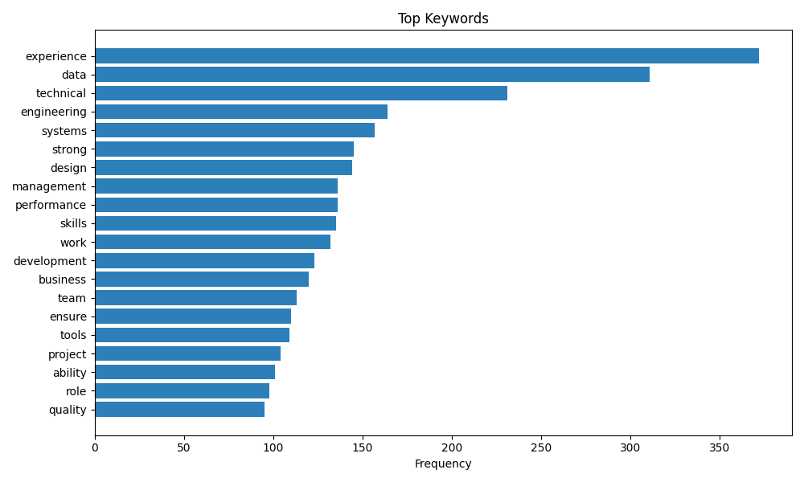
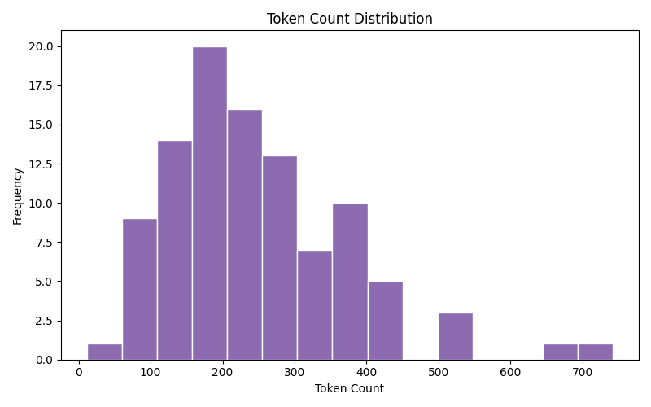
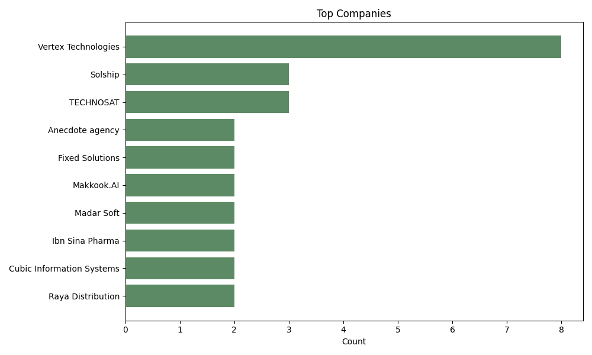
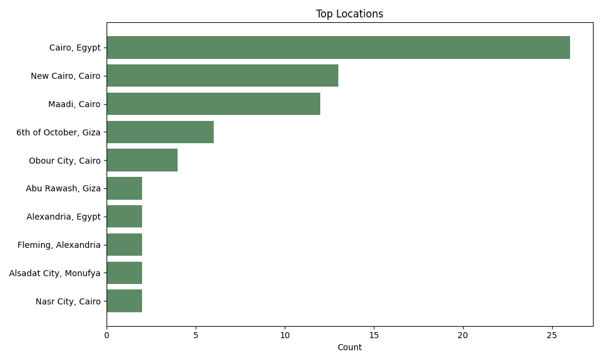
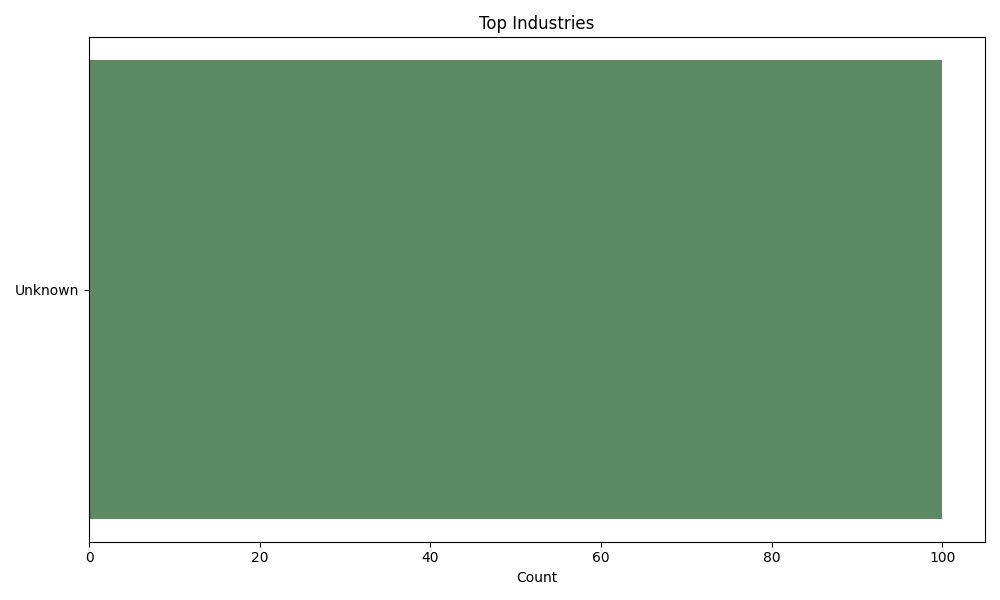
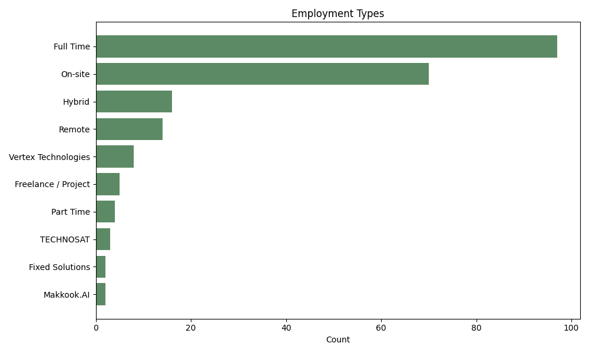

Top Keywords
CSV
Resume Keyword Optimser
A static overview of keyword insights from Wuzzuf job postings. Open the links below for raw data and detailed tables.
Update these values after each run.





